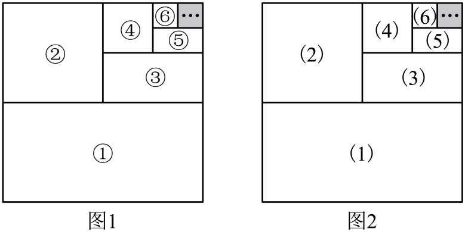
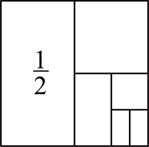
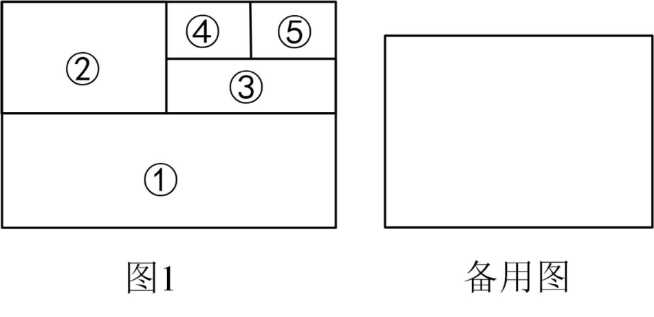
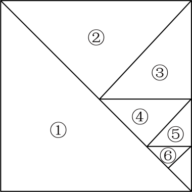

专题05 有理数的八大计算技巧（举一反三专项训练）
【北师大版2024】

【题型1 对消与凑整】 1
【题型2 归类与组合】 2
【题型3 活用运算律】 2
【题型4 裂项相消】 2
【题型5 错位相消】 3
【题型6 倒数法】 4
【题型7 相互转化】 5
【题型8 图形法】 5

知识点一 有理数的计算技巧（1）对消与凑整
将相加得零的数结合计算，将和为整数的数结合计算．
知识点二 有理数的计算技巧（2）归类与组合
将同类数（如正数或负数）归类计算，将相反数、分母相同或易于通分的数结合计算．
知识点三 有理数的计算技巧（3）活用运算律
运用运算律改变运算顺序，正难则反，利用运算律改变次序，将复杂的数拆开来算．
知识点四 有理数的计算技巧（4）裂项
常见的裂项一般是将一项拆分成两项或多项的和或差，使拆分后的项可前后抵消或凑整，其
中分数的裂项是重点．
知识点五 相互转化法
根据算式特点，将式子中的分数转化为小数，或小数转化为分数，统一后再进行运算．
【题型1 对消与凑整】
【例1】（24-25七年级上·湖南·阶段练习）计算+34−+6+−23−−14+−113；
【变式1-1】（24-25六年级上·山东威海·期中）计算123+−18−−13+−18
【变式1-2】（23-24七年级·上海普陀·期中）计算：−3.19+21921+−6.81−−2221
【变式1-3】（2024秋·广西崇左·七年级校考阶段练习）计算：
−218++5+−312++1.125++412；
【题型2 归类与组合】
【例2】计算：
(1)+3579+−2349；
(2)−201856+−201723+−112+4036．
【变式2-1】用简便方法计算：−16+24+635−18+445+18−6.8−3.2．
【变式2-2】（24-25七年级上·内蒙古呼和浩特·阶段练习）计算．−334−−212+−416−−523−1
【变式2-3】计算：(−214)−(−412)−(+418)+(−578)；
【题型3 活用运算律】
【例3】计算：−0.25×−3×8×−40×−13×−12.5．
【变式3-1】（24-25七年级上·江西赣州·期中）用简便方法计算：29−13−227×−27．
【变式3-2】算：−91213×12
【变式3-3】（23-24七年级·河南开封·开学考试）怎样简便怎样算
(1)2021×20222022−2022×20212021；
(2)112+214+318+4116+5132+6164
(3)2015+2016×20142016×2015−1
(4)920−1130+1342−1556+1772×121212131313
【题型4 裂项相消】
【例4】阅读下列材料：
计算：11×2+12×3+13×4+…+12021×2022
解：原式=1−12+12−13+13−14+…+12021−12022=1−12022=20212022
这种求和方法称为“裂项相消法”，请你参照此法计算：222−1+232−1+242−1+…+21002−1= ．
【变式4-1】计算：
11×3+13×5+15×7+17×9+19×11+111×13+……+197×99．
【变式4-2】（24-25七年级上·江苏南京·阶段练习）计算：11×2×3+12×3×4+13×4×5+...+19×10×11．
【变式4-3】（24-25九年级下·安徽阜阳·阶段练习）数学家基斯顿·卡曼于1808年发明了一种运算符号叫阶乘，用“!”表示．它的意思是：一个正整数的阶乘是所有小于及等于该数的正整数的积，如1!=1，5!=5×4×3×2×1．正整数N的阶乘记作N!，即N!=1×2×3×⋯×N．裂项相消法可以和阶乘结合起来研究，例如，我们可以把910!拆分为两个分母含有阶乘形式的分子为1的分数的差，即910!=10−110!=1010!−110!=19!−110!．
根据以上规律，解答下列问题：
(1)填空：5!=________；
(2)将67!+78!化简为两个分母含有阶乘形式的分子为1的分数的差的形式为________；
(3)计算：12!+23!+34!+45!+⋯+1819!+1920!．
【题型5 错位相消】
【例5】（2025·海南三亚·二模）阅读与思考：请阅读下列材料，并完成下列问题．
【等比数列】按照一定顺序排列着的一列数称为数列，数列的一般形式可以写成：a1,a2,a3,⋯,an,⋯，一般地，如果一个数列从第二项起，每一项与它前一项的比值等于同一个常数，那么这个数列叫做等比数列，这个常数叫做等比数列的公比，公比通常用q表示．如：数列1,2,4,8,⋯为等比数列，其中a1=1,a2=2，公比为q=2．
根据以上材料，解答下列问题：
（1）等比数列3,9,27,…的公比q为_____，第5项是_____．
【公式推导】
如果一个数列a1,a2,a3,…,an,…，是等比数列，且公比为q，那么根据定义可得到：a2a1=q, a3a2=q, a4a3=q, …, an+1an=q.
所以a2=a1⋅q,a3=a2⋅q=a1q⋅q=a1⋅q2,a4=a3⋅q=a2⋅q2=a1⋅q3,…
（2）由此，请你填空完成等比数列的通项公式：an=a1⋅_____．
【拓广探究】等比数列求和公式并不复杂，但是其推导过程——错位相减法，构思精巧、形式奇特．下面是小明为了计算1+2+22+…+22019+22020的值，采用的方法：
设S=1+2+22+…+22019+22020①，
则2S=2+22+…+22020+22021②，
②－①得2S−S=S=22021−1，
∴S=1+2+22+…+22019+22020=22021−1．
【解决问题】（3）请仿照小明的方法求3+32+33+…+32025的值．
【变式5-1】求11+112+113+…+112024的值．
【变式5-2】计算：14+142+143+⋅⋅⋅+14n
【变式5-3】解决下列问题：
(1)计算：12+(12)2+(12)3+(12)4+…+(12)8
(2)化简：M=5+2×52+3×53+4×54+…+8×58．
【题型6 倒数法】
【例6】（24-25七年级上·河南商丘·期中）请你先认真阅读材料：
计算：−130÷23−110+16−25．
解：原式的倒数是23−110+16−25÷−130
=23−110+16−25×−30
=23×−30−110×−30+16×−30−25×−30
=−20−−3+−5−−12
=−20+3−5+12
=−10．
故原式=−110．
再根据你对所提供材料的理解，选择合适的方法计算：−170÷310−514+835−27．
【变式6-1】（24-25七年级上·河北邯郸·期中）简便计算：−142÷16−314+23−27．
【变式6-2】（24-25七年级上·福建福州·期中）计算：−136÷116−79+512
【变式6-3】计算：−156÷18−514+928−−142×6．
【题型7 相互转化】
【例7】计算：
(1)−3÷−134×75%÷−37×−6；
(2)−15×−0.1÷125×−10；
【变式7-1】计算：+0.125−−334+−318−+1.75；
【变式7-2】利用运算律简便运算：
−3.61×0.75+0.61×34+−0.2×75%．
【变式7-3】计算：38×14+17×0.25+45×25%
【题型8 图形法】
【例8】）数形结合是解决数学问题的一种重要的思想方法．
材料一：欲求1+2+4+8+16+⋯+230的值，可以按照如下步骤进行：
令S=1+2+4+8+16+⋯+230……①
等式两边同时乘以2，得2S=2+4+8+16+32+⋯+231……②
由②式减去①式，得S=231−1，∴1+2+4+8+16+⋯+230=231−1．
材料二：如图1，将一个边长为1的正方形纸片分割成7个部分，部分①的面积是正方形面积的一半，部分②的面积是部分①的面积的一半，依此类推126=164，∴12+122+123+124+125+126=1−126．
阅读材料，解决问题：

(1)利用材料一提供的方法，请你求出1+5+52+53+54+⋯+520的值．
(2)如图2，若按这样的方式继续分割下去，受材料二的启发12+122+123+124+⋯+122023的值为______．
(3)通过学习材料一、材料二，选择你喜欢的方法解决问题：13+132+133+⋯+13n ______．（用含有n的式子表示）
【变式8-1】如图，正方形的边长为1，第一次取出正方形的一半，第二次取出剩下图形的一半……以此类推，每一次都取出剩下图形的一半，共进行n次这样的操作．

进行的次数 | 1 | 2 | 3 | n |
剩下图形的面积 | 12 | ____ | ____ | ____ |
(1)请将上表填写完整．
(2)请利用这个几何图形求12+122+123+⋯+12n的值： ．(用含n的代数式表示)
【变式8-2】在数学习题课中，同学们为了求12+122+123+124+125+…+12n的值，进行了如下探索：
（1）某同学设计如图1所示的几何图形，将一个面积为1的长方形纸片对折．
（I）求图1中部分④的面积；
（II）请你利用图形求12+122+123+124+125的值；
（2）请你利用备用图，再设计一个能求与12+122+123+124+125的值的几何图形．

【变式8-3】数和形是数学的两个主要研究对象，我们经常运用数形结合、数形转化的方法解决一些数学问题．下面我们来探究“由数思形，以形助数”的方法在解决代数问题中的应用．
如图，将一个边长为1的正方形纸片分割成7个部分，部分①是边长为1的正方形纸片面积的一半，部分②是部分①面积的一半，部分③是部分②面积的一半，依次类推．

(1)图中阴影部分的面积为 ；
(2)受此启发，得到12+14+18+⋯+126＝ ；
(3)迁移应用：得到23+13×23+132×23+133×23+⋯+132023×23＝ （直接写出答案即可）．